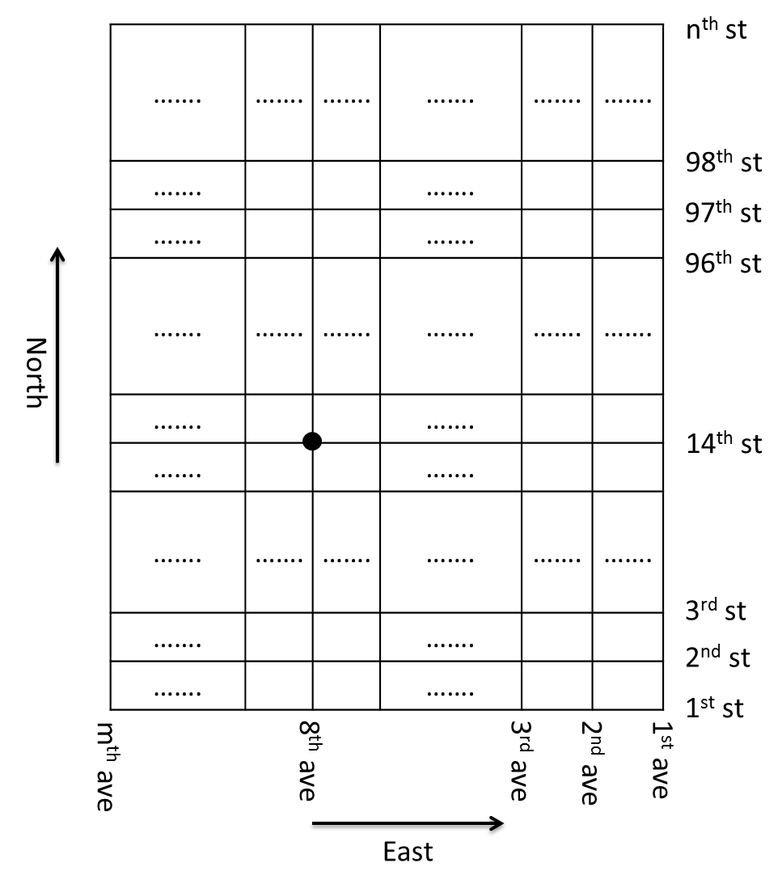

In Manhattan, the avenues run north-south and the streets run east-west. For simplicity, each point can be thought of as a (street, avenue) pair, where streets are numbered 1 to $n$ and avenues are numbered from 1 to $m$. Suppose you want to get from 14th St. & 8th Ave. to anywhere north of 96th St. in the shortest time. For simplicity, assume all streets are two-way; going east-west from one avenue to an adjacent one takes 3 units of time and going north-south from one street to another takes 1 unit of time.
